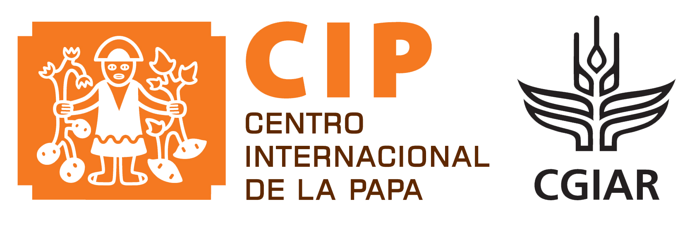
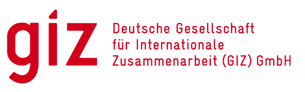
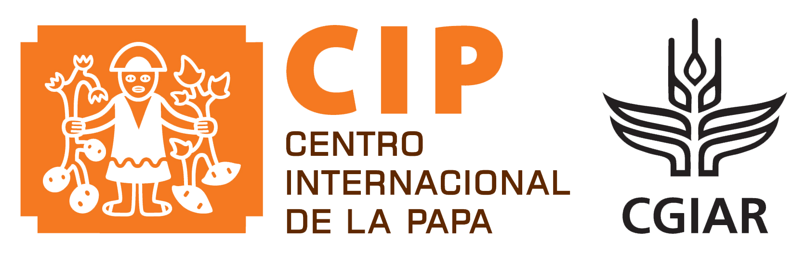
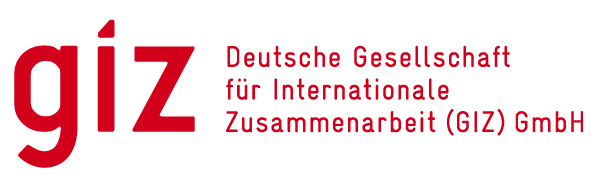

Seminarios virtuales “BPA-CI, en torno a sistemas agroalimentarios andinos basados en papa”
El Centro Internacional de la Papa (CIP) y el Instituto Interamericano de Cooperación para la Agricultura
(IICA) llevaron a cabo la serie de seminarios virtuales “Buenas Prácticas de Agricultura Climáticamente
Inteligente (BPA-CI), en torno a sistemas agroalimentarios andinos basados en papa”. Estos seminarios se
desarrollaron en el marco del proyecto “Papa, Familia y Clima” que es financiado por la Unión Europea a través
del Programa Euroclima+, Componente Producción Resiliente de Alimentos, ejecutado por GIZ y Expertise
France.
Durante este proceso de capacitación se ampliará la base de conocimientos sobre prácticas, tecnologías,
lecciones aprendidas e importancia de la implementación de prácticas de agricultura climáticamente inteligente
para mejorar la resiliencia y productividad de la agricultura familiar.
Objetivos del Proceso
1
Ampliar la base de conocimientos sobre prácticas y tecnologías de agricultura climáticamente inteligente, aplicables a la producción de papa, en torno a sistemas agroalimentarios andinos basados en papa
2
Identificar los pasos a seguir y las lecciones a considerar en los procesos de adopción de prácticas de agricultura climáticamente inteligente para la producción de papa en sistemas agroalimentarios andinos basados en papa
3
Valorar la importancia de implementar prácticas de agricultura climáticamente inteligente para mejorar la resiliencia y productividad de la agricultura familiar en sistemas alimentarios basados en papa.
Público Meta
Investigadores y técnicos del sector público, privado, sociedad civil y organismos internacionales, vinculados a sistemas agroalimentarios andinos basados en papa de Bolivia, Ecuador y Perú
Metodología
La metodología aplicada en la serie de seminarios gira en torno a dos herramientas de aprendizaje: sesiones técnicas desarrolladas en tiempo real y por expertos en las temáticas (a través de la plataforma Zoom), y foros de debate desarrollados de forma asincrónica, esta actividad y los materiales (documentos, presentaciones y vídeos), así como la grabación de la videoconferencia son puestos a disposición de los participantes para su lectura a través de la plataforma Gestión Participativa del IICA en Perú
Contenido y Duración
La serie de seminarios está estructurada en tres módulos que se desarrollarán de forma secuencial, el módulo 1 y 3 se desarrollarán en una sola sesión técnica (seminario) cada uno. El módulo 2, eje central de este proceso de formación se desarrollará en siete sesiones técnicas (seminarios). Cada seminario se realizará 1 vez por semana, con una duración de dos horas aproximadamente. Se prevé una dedicación de dos a tres horas para el trabajo asincrónico por semana. En total, el proceso durará 9 semanas (aproximadamente 45 horas cronológicas).
 


